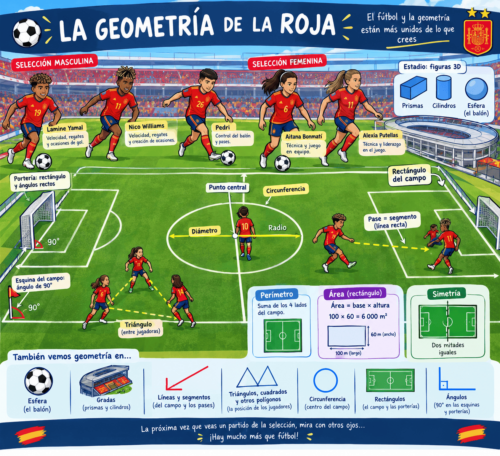
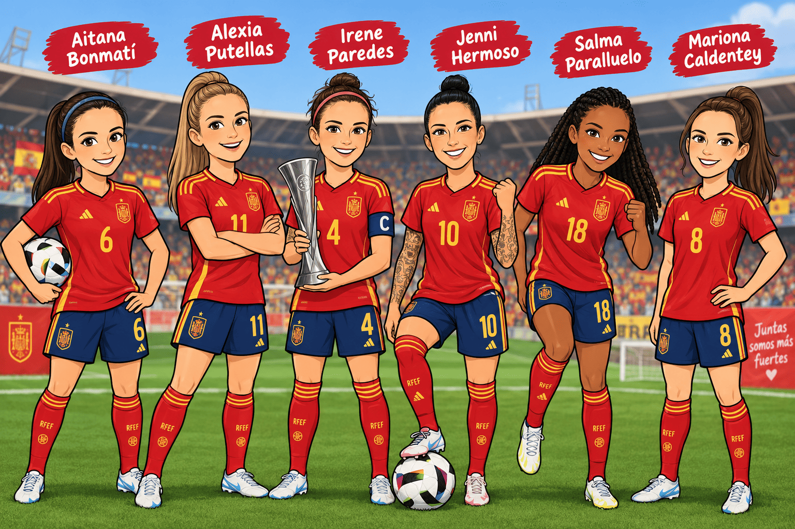

⚽ LA GEOMETRÍA DE LA ROJA ⚽
El fútbol parece, a primera vista, un deporte de velocidad, pases y goles. Sin embargo, si observamos con atención un partido, descubrimos que las matemáticas y, especialmente, la geometría, están presentes en muchos lugares.
La selección española, tanto masculina como femenina, juega sus partidos en campos llenos de figuras geométricas. Las líneas blancas que marcan el terreno de juego son segmentos y rectas. El campo tiene forma de rectángulo, con dos lados largos y dos lados cortos. Además, en el centro encontramos una gran circunferencia.
En un partido de la selección masculina podemos disfrutar de jugadores como Lamine Yamal y Nico Williams, conocidos por su velocidad, sus regates y su capacidad para crear ocasiones de gol. También encontramos a Pedri, que destaca por su capacidad para controlar el balón y realizar pases.
En la selección femenina también encontramos grandes figuras, como Aitana Bonmatí y Alexia Putellas. Ambas han sido protagonistas de muchos momentos importantes del fútbol español. Su técnica y su capacidad para jugar en equipo hacen que sean jugadoras muy reconocidas.
Pero todos ellos, además de jugar al fútbol, están rodeados de geometría.
Por ejemplo, cuando un jugador o una jugadora se encuentra en el centro del campo, está situado cerca del punto central de la circunferencia. La línea que une dos puntos de una circunferencia pasando por su centro se llama diámetro. Si trazamos una línea desde el centro hasta el borde de la circunferencia, tenemos un radio.
También podemos encontrar geometría en las porterías. El marco de una portería forma aproximadamente un rectángulo, mientras que algunas partes de su estructura pueden formar ángulos rectos. Las esquinas del campo también nos permiten observar ángulos de 90 grados.
Cuando Nico Williams o Lamine Yamal realizan un pase, podemos imaginar una línea recta entre el lugar desde donde sale el balón y el lugar al que llega. La distancia recorrida por el balón puede considerarse un segmento. Del mismo modo, cuando Aitana Bonmatí o Alexia Putellas realizan un pase a una compañera, podemos imaginar diferentes segmentos que unen las posiciones de las jugadoras.
Si varios jugadores se colocan formando una figura, también podemos imaginar triángulos, cuadrados u otros polígonos.
La geometría también aparece cuando estudiamos las distancias. El perímetro de una figura representa la longitud de todo su borde. Por ejemplo, podemos calcular el perímetro del campo de fútbol sumando la longitud de sus cuatro lados.
El área, en cambio, nos indica la superficie que ocupa una figura. Para calcular el área de un rectángulo utilizamos:
Área = base × altura
Así, si un campo tuviera 100 metros de largo y 60 metros de ancho, su área sería:
100 × 60 = 6 000 m²
Esto significa que la superficie del campo sería de 6 000 metros cuadrados.
También podemos estudiar las formas que aparecen fuera del terreno de juego. Las gradas pueden tener diferentes estructuras y en un estadio podemos encontrar prismas, cilindros y otras figuras tridimensionales. Incluso un simple balón nos recuerda una figura geométrica: la esfera (de ahí que muchos comentaristas deportivos se refieran a él como "el esférico").
La simetría también está presente. Muchas partes del campo son simétricas respecto a una línea central. Si imaginamos que doblamos el campo por esa línea, las dos mitades tendrían una forma muy parecida. Esta idea nos ayuda a comprender el concepto de simetría.
Por tanto, la próxima vez que veamos jugar a la selección española, podemos intentar mirar el partido con otros ojos. No solo veremos pases, regates y goles. También podremos descubrir rectángulos, circunferencias, segmentos, ángulos, triángulos, polígonos, áreas, perímetros y simetrías.
El fútbol y la geometría pueden parecer dos mundos diferentes, pero están mucho más unidos de lo que pensamos. Solo tenemos que observar el campo con atención para descubrir que, detrás de cada jugada, también puede haber un poco de matemáticas.

📝 Preguntas de comprensión lectora
- ¿Qué figura geométrica tiene la forma general del campo de fútbol?
- ¿Qué figura encontramos en el centro del campo?
- ¿Qué es un diámetro?
- ¿Qué tipo de ángulo podemos encontrar en las esquinas del campo?
- ¿Qué jugadores o jugadoras de la selección española aparecen mencionados en el texto?
- ¿Qué diferencia hay entre el perímetro y el área?
- Si un campo mide 100 m de largo y 60 m de ancho, ¿cuál es su área?
- ¿Qué figura geométrica podemos relacionar con un balón?
- ¿Respecto a qué elemento podemos observar simetría en el campo?
- Escribe cuatro elementos geométricos que aparezcan en el texto.
⚽ Fútbol femenino y fútbol masculino: una cuestión de igualdad ⚽
El fútbol es uno de los deportes más populares del mundo. Durante muchos años, sin embargo, el fútbol masculino ha recibido mucha más atención, dinero y reconocimiento que el fútbol femenino. Esta diferencia no se debe a que las mujeres tengan menos capacidad para jugar al fútbol, sino a que durante mucho tiempo tuvieron menos oportunidades para practicarlo, competir y convertirse en profesionales.
Dos caminos con una historia diferente...
El fútbol masculino se desarrolló como deporte profesional mucho antes que el femenino. Esto permitió crear antes grandes competiciones, clubes profesionales, estadios, retransmisiones televisivas y contratos para los jugadores.
En España, el fútbol femenino tuvo que superar muchas dificultades. Durante décadas existieron prejuicios que consideraban que el fútbol era principalmente un deporte para hombres. Como consecuencia, muchas niñas y mujeres tuvieron menos posibilidades de entrenar, competir o dedicarse profesionalmente a este deporte.
En los últimos años esta situación ha cambiado mucho. El fútbol femenino ha conseguido una mayor profesionalización, más público y una mayor presencia en los medios de comunicación.
🏆 Los títulos también cuentan
La selección española femenina ha conseguido en muy poco tiempo algunos de los títulos más importantes del fútbol internacional.
En 2023, España ganó por primera vez la Copa Mundial Femenina de la FIFA, derrotando a Inglaterra en la final.
En 2024, consiguió también la primera edición de la UEFA Women's Nations League, al ganar 2-0 a Francia en Sevilla.
Y en 2025, España volvió a ganar la Women's Nations League, esta vez frente a Alemania, por 3-0 en el resultado global de la final. De esta forma, la selección femenina consiguió defender su título.
Además, en la Eurocopa Femenina de 2025, España llegó hasta la final frente a Inglaterra. El partido terminó 1-1 después de la prórroga y España perdió en la tanda de penaltis.
Estos resultados muestran que el fútbol femenino español ha alcanzado un nivel internacional muy alto.
🌟 Algunas jugadoras referentes
Varias futbolistas españolas se han convertido en referentes para muchas niñas y jóvenes:
- Aitana Bonmatí es una de las grandes centrocampistas del fútbol español. Destaca por su capacidad para controlar el juego, pasar el balón y participar en los ataques. Fue elegida mejor jugadora de la fase final de la Women's Nations League 2023/24.
- Alexia Putellas es otra de las grandes referentes del fútbol español. Ha sido una de las líderes de la selección y una figura muy importante en el crecimiento de la visibilidad del fútbol femenino.
- Irene Paredes ha destacado como defensa y como capitana de la selección española. Fue la jugadora que levantó el trofeo de la primera Women's Nations League conquistada por España en Sevilla.
- Jenni Hermoso ha sido una de las máximas goleadoras y jugadoras más importantes de la historia reciente de la selección española. Formó parte del equipo campeón del mundo en 2023.
También podemos destacar a Salma Paralluelo, que combina velocidad y capacidad goleadora, y a Mariona Caldentey, que ha sido importante tanto en el juego ofensivo como en los grandes éxitos recientes de la selección.

📊 ¿Dónde está la diferencia?
Si comparamos el fútbol femenino y el masculino, encontramos diferencias importantes:
- El fútbol masculino tiene una historia profesional más larga.
- Los clubes masculinos han generado tradicionalmente más ingresos y han tenido más inversión.
- Los futbolistas masculinos han tenido durante décadas una mayor presencia en televisión, publicidad y medios de comunicación.
- El fútbol femenino ha tenido menos oportunidades históricas para desarrollarse.
- La asistencia a los estadios y el interés por las competiciones femeninas están creciendo.
- Los éxitos de la selección española femenina han aumentado mucho su visibilidad.
Por tanto, cuando hablamos de igualdad, no significa necesariamente que todo tenga que ser exactamente igual. Significa que las personas deben tener las mismas oportunidades para desarrollar sus capacidades, independientemente de si son hombres o mujeres.
El ODS 5 busca lograr la igualdad entre mujeres y hombres y eliminar las desigualdades relacionadas con el género.
El fútbol nos permite reflexionar sobre esta cuestión: durante mucho tiempo, niños y niñas no tuvieron las mismas oportunidades dentro de este deporte. El crecimiento del fútbol femenino demuestra que, cuando existen oportunidades, formación, apoyo y reconocimiento, las mujeres pueden alcanzar los niveles más altos de competición.
La igualdad no consiste en decir que hombres y mujeres son iguales en todo. Consiste en que el género no sea una barrera para practicar un deporte, estudiar, trabajar o alcanzar una profesión.
Por eso, conocer los logros de las futbolistas españolas también sirve para que las nuevas generaciones tengan referentes femeninos y puedan pensar:
“Yo también puedo hacerlo”.